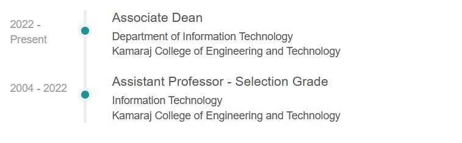

Profile
Dr Vakaimalar Elamaran Associate Dean from Kamaraj College of Engineering and Technology
Expertise
Computer Science Information Systems
Personal details
Gender:
Female
Working at:
Kamaraj College of Engineering and Technology, S.P.G.Chidambara Nadar – C.Nagammal Campus, S.P.G.C.Nagar, Near Virudhunagar
Location :
Madurai, Tamil Nadu, - 625701
Experience

Qualification
PHD
Membership In Professional Bodies
ISTE Life Member